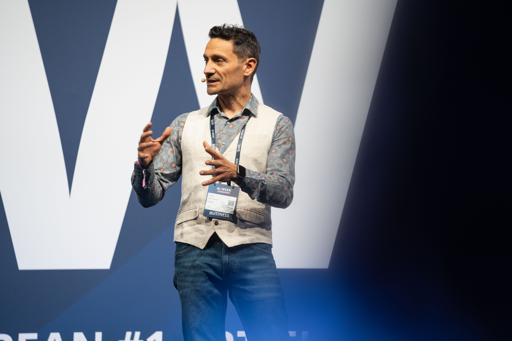
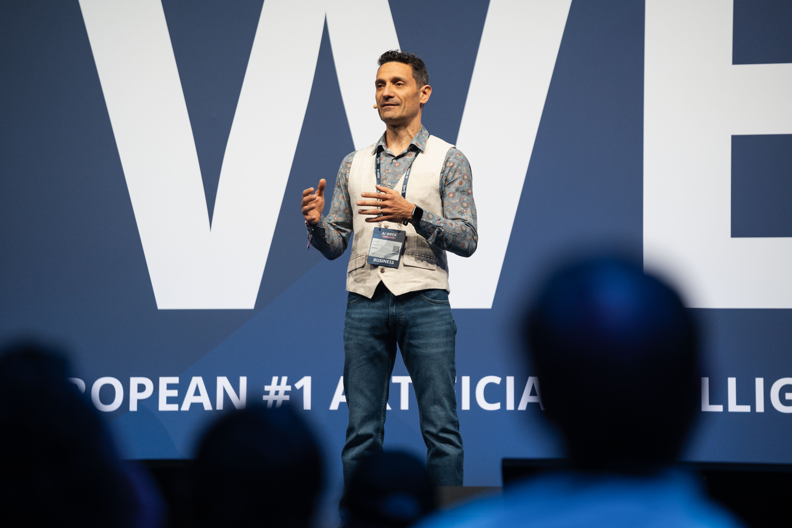
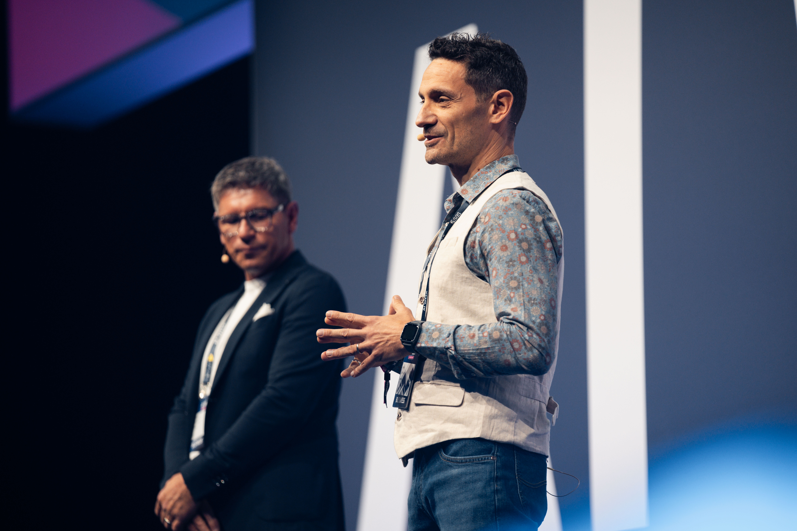
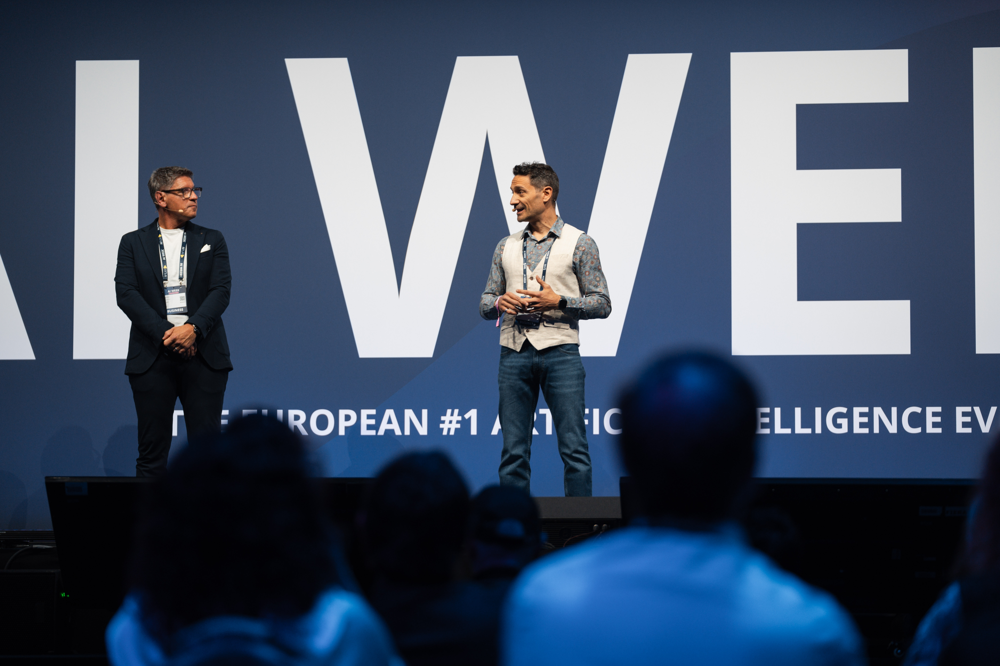
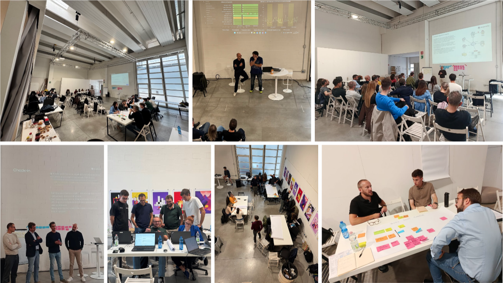

⚡
Top-down
L'AI arriva dall'alto senza coinvolgimento. Nessuno capisce perché, nessuno la usa davvero.
AI Friday è il metodo che trasforma i colleghi in protagonisti del cambiamento. Un format, una rete, un framework. Risultati veri, in settimane.
Roadmap calate dall'alto. Slide con strategie. Tool comprati e mai usati. Il risultato? Basso adoption, scetticismo diffuso, budget sprecato.
Il problema non è la tecnologia. È che le persone non sono al centro.
L'AI arriva dall'alto senza coinvolgimento. Nessuno capisce perché, nessuno la usa davvero.
Progetti pilota isolati, nessun framework, ogni team va per conto suo.
L'IT diventa l'unico proprietario. Il business resta spettatore.
Esiste un modo diverso.
Appuntamenti ricorrenti, in luoghi diversi dall'ufficio. Non corsi. Non webinar. Esperienze progettate per far pensare diversamente. Ogni sessione è unica. Ogni sessione lascia qualcosa.
Dal primo incontro — dove tutti sono un po' spaesati — alla quinta sessione, dove nasce una vera squadra.
Rompiamo i silos. Perché l'AI, perché adesso, perché tu.
AI hands-on. Strumenti reali, casi concreti, zero buzzword.
I problemi veri vengono dal basso. Raccolta requisiti dal campo.
Dal foglio alla soluzione. Veloce, iterativo, misurabile.
Un gruppo consapevole, motivato, pronto a moltiplicarsi.





Sessioni reali. Persone reali. Nessuna slide inutile.
Non formatori esterni. Non consulenti. Colleghi scelti, formati e motivati che diventano i punti di riferimento AI all'interno di ogni funzione aziendale. Il loro ruolo è duplice: condividono ciò che imparano e raccolgono le esigenze reali dei colleghi intorno a loro — senza calare nulla dall'alto.
Raccolgono problemi reali dai colleghi. Non aspettano che i bisogni arrivino su.
Diffondono cultura AI nelle loro funzioni. Moltiplicatori, non centralizzatori.
Filtrano, prioritizzano, portano requisiti al governance team in modo strutturato.
Come una startup, dall'interno. Massimo 3 iniziative in parallelo. Nessun progetto infinito.
Team di Progetto
Team di Progetto
Gov. Team + Ambassador
Gov. Team + Board
"Ognuno di questi è partito da una persona con un problema reale, non da una slide con una roadmap."
Dietro ogni AI Friday c'è una piattaforma tecnica costruita appositamente per ridurre il time-to-value a settimane. Ogni agente sviluppato diventa un servizio riutilizzabile per nuove iniziative — un catalogo che cresce con l'azienda.
Dall'idea al prototipo funzionante in settimane. Architettura definita, qualità controllata, costi sotto controllo.
Ogni soluzione costruita diventa un mattone per la prossima. La piattaforma cresce con te.
Infrastruttura proprietaria: qualità, costi, sicurezza e compliance sempre nelle tue mani.
Una piattaforma, N iniziative. Ogni nuovo use case si appoggia su ciò che esiste già.
Non PoC dimenticati. Non demo. Soluzioni in produzione, costruite in settimane, da team interni.
"Trovare un'informazione richiedeva troppo tempo. Ora ogni punto vendita trova tutto in autonomia, in secondi."
"Chilometri di carta, operatività manuale, rischio errore continuo. Ora è tutto digitale su tablet."
"Due settimane di lavoro manuale trasformate in una dashboard pronta in meno di due ore."
Monitoraggio automatico delle leggi per l'ufficio legal.
Nato come scommessa, ora coinvolge attori interni ed esterni.
"L'AI non è uno strumento per fare di più. È uno strumento per lavorare meglio."
Le persone devono potersi concentrare sulle attività nelle quali possono portare valore: il loro potenziale è illimitato, il loro tempo no.
Qual è il problema reale? Non il sintomo. Andiamo in profondità, ascoltiamo le persone.
Cosa vogliamo ottenere davvero? Qual è l'impatto misurabile per le persone e per il business?
Non tutto va risolto con l'AI. Semplificare viene prima di automatizzare.
Mettiamo in discussione l'as-is. Un processo rotto automatizzato è ancora rotto.
Solo ora entra l'AI. Veloce, misurabile, scalabile.
Che tu sia all'inizio del percorso o già in mezzo al cambiamento, parlaci della tua realtà. Capiremo insieme se e come il metodo fa per te.
Ti risponderemo entro 48 ore. Nessuno spam, promesso.